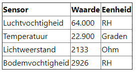

Artikel Plantwatersysteem
Naam: Jan-Willem Arendsen, Datum: 23-12-2020

Voor het vak Smart Technology is er een plantwatersysteem gemaakt. In dit artikel kan gelezen worden hoe dit systeem tot stand is gekomen en wat mijn ervaringen hierbij zijn. Ook is er een demonstratie te vinden van hoe mijn plantwatersysteem werkt.
Programmeren Arduino
Dit werd voornamelijk in het begin van de minor uitgevoerd. Onderaan de pagina kan het filmpje gezien worden waarin het systeem en de functies worden uitgelegd. Dit plantwatersysteem bestaat uit een minicomputer (Arduino), met vochtigheidssensoren, een temperatuursensor, een relais en een waterpomp. Dit systeem moest geprogrammeerd worden.
Tijdens de eerste vier weken van de minor werd er wekelijks een les klaargezet, om de Arduino te leren kennen. De Arduino werd geprogrammeerd in het programma Code. Ook kregen wij een bakje met onderdelen, waarin onder andere een breadboard, een Arduino, de pomp, een klikaanklikuit, de sensoren en een aantal draden zitten. Je Arduino is via een USB/USB-C kabel verbonden met de computer. De programmeerlessen werden op locatie gehouden, omdat er bij het programmeren vaak fouten zijn, die bij elke persoon anders kunnen zijn. Ook is het samen programmeren zeer leerzaam. In de eerste les leerden we de Arduino kennen. Het belangrijkste doel was dat je communicatie met je Arduino hebt. Aan het einde van de eerste les had ik een ledlamp aan het knipperen.
In de tweede les werden alle sensoren bedraad en aangestuurd via een los programma in Code. Omdat uiteindelijk alle verschillende onderdelen los van elkaar moesten werken, heb telkens wanneer een nieuwe sensor of actuator bedraad en geprogrammeerd moest worden, de vorige sensor in het breadboard laten zitten, zodat ik dit niet aan het einde opnieuw hoefde te installeren.
In de derde les werd de klikaanklikuit geprogrammeerd, zodat dit slimme stopcontact luistert naar je Arduino en om de waarden van de sensoren te plaatsen in de Blynk-app en verschillende inputs te versturen via de Blynk-app.
In de laatste les mocht je je systeem programmeren, zodat het plantwatersysteem het doet. Ook stond een extra opdracht in deze les, namelijk om de waarden van het plantwatersysteem (die ook zichtbaar zijn in de Blynk-app) weer te geven op je portfolio. Dit heb ik uitgevoerd. De code van de body die ik gebruikt heb ziet er als volgt uit (de navitagiebar heb ik niet meegenomen in het script):
<!DOCTYPE html>
<html lang="en">
<meta http-equiv="refresh" content="20" />
<link rel="stylesheet" href="https://stackpath.bootstrapcdn.com/bootstrap/4.3.1/css/bootstrap.min.css" integrity="sha384-ggOyR0iXCbMQv3Xipma34MD+dH/1fQ784/j6cY/iJTQUOhcWr7x9JvoRxT2MZw1T" crossorigin="anonymous">
<link rel="stylesheet" href="https://cdnjs.cloudflare.com/ajax/libs/font-awesome/4.7.0/css/font-awesome.min.css">
<Link rel="stylesheet" href='../Css/Styles.css'>
<head>
<title>Live PlantWaterSysteem</title>
</head>
<body>
<meta charset="UTF-8">
< meta name="viewport" content="width=device-width, initial-scale=1.0">
<div class="PlantWaterSystem">
<h1>Live Plantwatersysteem</h1>
<p>Wanneer dit systeem live is, veranderen de waarden elke 20 seconden. De waarden veranderen dan mee met de werkelijke waarden die gemeten wordt.</p>
<TABLE BORDER="1">
<TR> <TH>Sensor</TH> <TH>Waarde</TH> <TH>Eenheid</TH></TR>
<TR> <TD>Luchtvochtigheid</TD> <TD> <div id="Humidity" style="color:black"> V1</div> </TD> <TD>RH</TD> </TR>
<TR> <TD>Temperatuur</TD> <TD> <div id='Temperature' style="color:black"> V2</div> </TD> <TD>Graden</TD> </TR>
<TR> <TD>Lichtweerstand</TD> <TD> <div id= "LdrValue" style="color:black"> V4</div> </TD> <TD>Ohm</TD> </TR>
<TR> <TD>Bodemvochtigheid <TD> <div id= "moistValue" style="color:black"> V5</div> </TD> <TD>RH</TD> </TR>
</TABLE>
</div>
<script>
var auth_token = 'pJQgtU0eLTE6HxNZA2l_sAkg6JnuQzky';
function get_pin(pin, element) {
fetch('http://blynk-cloud.com/' + auth_token + '/get/' + pin)
.then(response => response.json())
.then(data => {
window[pin] = data;
document.getElementById(element).innerHTML = data;
})
.catch(error => console.error(error))
}
get_pin('V1', "Humidity");
get_pin('V2', 'Temperature');
get_pin('V4', 'LdrValue');
get_pin('V5', 'moistValue');
</script>
</body>
</html>
Dit script ziet er op mijn portfolio uit zoals zichtbaar is in de onderstaande tabel. Ook heb ik gelijk na deze les mijn programma zo geprogrammeerd dat mijn plantwatersysteem het doet. Dit heb ik gedaan, omdat ik bang was dat als ik hiermee zou wachten, ik een gedeelte van het programmeren zou vergeten. Ook zaten de te volgen stappen nu nog vers in mijn geheugen.
{kind=link}
PCB-ontwerp
Na de programmeerlessen, moest er een printplaat (PCB) ontworpen worden. Deze lessen werden online gehouden. De printplaat is ontworpen met het programma Eagle. Het begin van de eerste les kregen wij een kort voorbeeld, waarbij stap voor stap de uit te voeren stappen werden uitgelegd. Vervolgens kon je eigen PCB ontworpen worden. Hierbij moesten de inputs die je geprogrammeerd hebt op de Arduino ook kloppen met de printplaat, omdat je anders straks de verkeerde inputs aanstuurt. Het was dus goed kijken naar je programma. Alle 3.3V aanputs werden met elkaar verbonden. De ground (min) werd verbonden via de bodem van de printplaat. Deze printplaat werd na controle geproduceerd in China, waarna wij na 6 weken de ontworpen PCB thuisbezorgd kregen.
Mijn PCB ziet er als volgt uit. Ik heb een paar punten, die ik bij een 2e versie zou veranderen, omdat dit niet handig is. Ten eerste heb ik (of Eagle tijdens het converteren) mijn DHT-sensor omgedraaid op mijn board vergeleken met mijn schets. Tijdens het testen heb ik hierdoor bijna mijn DHT-sensor verbrand. Ten tweede heb ik de aansluitingen van het relais te dicht bij het relais geplaatst en heb ik de inputs verkeerd om geplaatst, waardoor de bedrading daar chaotisch zit.
{kind=link}
Solderen
Nadat de PCB thuisbezorgd is, moest de PCB gesoldeerd worden. Op de plek waar de Arduino moest komen, zijn pinnen gesoldeerd, omdat zo de Arduino makkelijk vervangen kan worden, als deze stuk is. Met de overige pinnen zijn de andere aansluitingen gesoldeerd, behalve bij de bedrading naar het relais, want deze draden heb ik direct op de printplaat gesoldeerd. Nadat alles gesoldeerd is, heb ik alle componenten en bedrading op de PCB gemonteerd en het relais met bouten op de PCB gemonteerd.
Het systeem
Nadat alle componenten gesoldeerd en gemonteerd zijn op de PCB, heb ik het systeem gecontroleerd. Ik kwam er tijdens het testen achter dat het schema en het board van de PCB de plus en de min op Eagle van de DHT-sensor hadden omgedraaid, maar hier ben ik op tijd achter gekomen. Verder deed het systeem het goed. Ik heb vervolgens een demonstratie van het plantwatersysteem gemaakt. Dit filmpje kan hieronder gezien worden. Normaal gesproken was er daarna een behuizing getekend met het programma Solid Works, maar omdat er een tweede lockdown in verband met Covid-19 gekomen is, is het ontwerpen van de behuizing vervangen door een andere, theoretische, opdracht.
Ervaring
Ik vond het een zeer interessante opdracht. Tijdens mijn vorige opleiding MBO Middenkader Engineering Mechatronica heb ik wel gewerkt met PLC’s, maar niet met Arduino’s. Ik heb daarom moeite met het programmeren van tekst. De lessen op Robot Exchange van Mathijs, vond ik zeer interessant en goed te volgen. Bij de laatste stap, de waardes op je portfolio laten zien, dacht ik dat ik een grote fout had gemaakt, maar dit bleek achteraf alleen de beveiliging van de website te zijn.
Het ontwerpen van de PCB was redelijk eenvoudig en goed te volgen, als je had opgelet tijdens de eerste vier workshops. Ik kende Eagle niet, maar kende het principe van een elektrisch schema maken wel. Ik vond de uitleg van Matthijs nuttig. Nadat de printplaten thuisbezorgd waren, zou er een soldeercursus zijn. Deze viel door overmacht uit. Ik had al een keer eerder gesoldeerd, dus ik had hier relatief weinig moeite mee. Wel vond ik de 15 watt soldeerbout, wat aangeraden werd, net te klein, omdat het best lang duurde voordat het tin smolt. De volgende keer zou ik liever voor een 25 watt soldeerbout kiezen. Nadat alle pinnen gesoldeerd waren heb ik het systeem getest. Dit ging vrij vloeiend, omdat ik het programma al een aantal keren had getest. Het grootste probleem was dat mijn waarden op mijn portfolio alleen aangepast worden, wanneer de Arduino op de computer is aangesloten en via Code is geconnect.
Al met al vond ik dit een van de leukere dingen die wij geleerd hebben tijdens de minor, omdat ik het leuk vind om hier mee te spelen. Daarnaast werden de lessen leuk en motiverend gegeven.